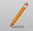

Lines can be drawn on the worksheet in order to create borders, section dividers or labels.
Line
Selected line on a worksheet
-
Create LineTo create a new line use one of the following methods:
- In GraphPouch, press Control-N (^N).
- In GraphPouch select .
- Press the New Line button

-
Remove LineTo remove a line follow these steps:
- Select the line you would like to delete by clicking on the line using the left mouse button. The selected line will have a blue rectangle designating its selected state.
Optionally you can select multiple lines by clicking on the line and pressing the Shift or ⌘ key. - Press the Delete key.
- Select the line you would like to delete by clicking on the line using the left mouse button. The selected line will have a blue rectangle designating its selected state.